1. Knowledge-Based Systems background
1.1 What is a Knowledge-based system?
1.2 Programming languages
1.3 Where are they used?
1.4 Knowledge-based systems structure
1.5 Current trends
2. The CommonKADS methodology
2.1 A brief history
2.2 Models suite
2.3 Roles
3. Developing a KBS with CommonKADS
3.1 Domain Knowledge
3.1.1 Class
diagram
3.1.2 Expressions
relationship
3.1.3
Knowledge-base
3.2 Inference Knowledge
3.2.1 Inference
scheme
3.2.2 Domain
connection
3.3 Task Knowledge
4. Implementation (sample)
5. C++ embedding
6. Further reading and references
Knowledge-based systems are one branch of Artificial Intelligence, and we can say they are a reality in the systems development world nowadays. They are usually embedded in other applications, performing knowledge-specialized tasks.
Knowledge-Based Systems are the result of a long
investigation process performed by Artificial Intelligence scientist. In the
early 70's they started to understand that the capabilities of a computer
program to solve problems are neither the formal expression nor the inference
logic schemes but the knowledge it has. An expert is a person who owns a type of
knowledge and experience in some human field activity, and he
can apply it efficienctly in solving different tasks that he does not know
specifically, but are in his knowledge domain. Therefore, a Knowledge-Based System is a group of computer programs that tries to
emulate and even outdo in some situations a human expert in his field. The idea is not to
replace human thinking by a machine, just the expertise of a competent
professional. In order to build a KBS the Knowledge Engineers are usually
advised by these experts. In some fields these experts work using rules, although
they do not always realize it.
Knowledge-Based Systems are powerful when it is not necessary to use neither intuition nor common sense, getting successful results.
There have been two generations in Knowledge-Based Systems. In the first one,
Knowledge Engineers were limited to code rules containing the
knowledge of an expert. This formalism was not good enough because the projects were
very difficult to maintain and expensive. Besides this, knowledge acquisition was
heavily dependent on the expert.
In the second generation, Allen
Newel proposed the Knowledge Level where knowledge is independent of
implementation and it is structured according to the different knowledge levels:
|
Newell points out the need to use models. In this way, we define
"knowledge acquisition" as a process where the Knowledge Engineer
creates a knowledge model that he will later make computational.
Second generation methods are used nowadays.
KBS are usually programmed using languages like Prolog, Lisp, C++ and lately CLIPS, which will be explained hereby. Lisp is a functional language and has been traditionally used for Artificial Intelligence with a very good result. In counterpart, Prolog is a declarative language and unlike procedural languages, it does not describe a sequential algorithm to solve a problem, but asserts facts and relationships through a inference engine. The procedural languages are oriented to "how", while decarative ones are oriented to "what". On the other hand, C++ is the most effective and optimized resource language, however it lacks inference engine and it should be implemented from scratch.
Starting from a given problem, these systems determine the most adequate solution according to the system-included knowledge.
They select and plan the required components needed in a particular
process. For example, systems that help to configure physical equipment,
starting from the given components and requirements.
These systems determine the causes of a symptom, for example disease diagnosis and troubleshooting.
They deal with large amount of information, interpreting it, giving an
explicative report and suggesting actions to take. An example of this are systems to
evaluate resistance of structures against earthquakes.
It's a particular case of interpretation and analysis,
that is very frequently used, so it will be considered separately. Its
purpose is usually monitoring a process and giving a control output, for
example the control of a nuclear power plant.
They establish the stages and resources to get a goal.
An example of this are systems to solve industrial logistic problems.
They solve situations where complex equipment is difficult to use by people,
for example, an autopilot.
Advice in computer aided design (CAD), for example the correct voltage in an electronic design program.
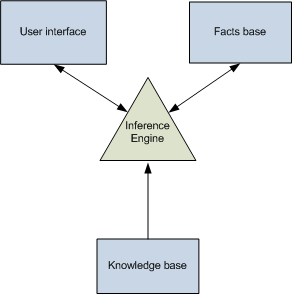
A KBS has the human expert knowledge in a formalized and structured form; this is what is known as a knowledge base. Some Knowledge-Based Systems include mataknowledge or knowledge about knowledge, that is to say, the capability to search the knowledge base and find the solution of a problem in an intelligent manner, using different resolution strategies with their particular conditions. This means that some criteria are defined by which the system decides one or other strategy in function of initial data.
The knowledge base can be represented as predicate calculus, lists, objects, semantic networks and/or production rules. Most frequently it is implemented using rules and objects.
It is also called rule interpreter and its goal is to search and select the correct rule to be applied in the reasoning process.
It is like a temporal-auxiliary memory that stores the user data, initial problem data, hypothesis, and intermediate results during inference process. Through it, we can know the current system status and how it was reached.
The best way to store this information is in relational data-bases, rather than in other rudimentary systems.
It allows communicating with the KBS, data input and output.
The development of Knowledge-Based Systems is not sufficiently standardized. Nevertheless, there is an emerging european methodology, funded as an ESPRIT project, to develop Knowledge-Based Systems. It is called KADS (Knowledge Adquisition Design System). For KADS, building a Knowledge-Based System is basically a modeling activity. One of the most important characteristics in KADS is the construction of a complete knowledge model which is independent of the implementation. Finally, KADS is a results-oriented methodology; the results obtained as a product of each development activity are the only objective criteria for the project control and direction.
CommonKADS is the leading methodology to support KBS engineering. It has been developed and tested by many companies and universities in the context of the European ESPRIT program. It is now the European de-facto standard for Knowledge-Based System development, and it has been adopted in companies in Europe, as well as in the US and Japan. CommonKADS also provides the methods to perform a detailed analysis of knowledge tasks and processes. The image below shows the evolution of Knowledge- Based Systems methodologies:
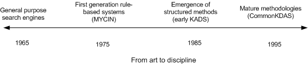
CommonKADS was originated from KADS-I project, a longer and more technically and staffed project, though this methodology lacked of formalization. In the winter of 1990 began the development of a new methodology that was commercially viable and covered all the KBS life cycle. The result was a new methodology called CommonKADS.
"A model reflects, through detail abstraction, system characteristics in the real world. Each model highlights certain system characteristics and abstracts other ones". [DeMarco, 82].
The model suite provides task decomposition in knowledge engineering, which reduces the
complexity. While a model is built other aspects can be left for later.
The commonKADS models are shown in the image below:
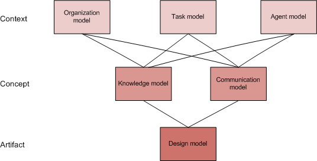
Organization model
It describes and analyzes the main activities of an enterprise.
Task model
It analyzes the organization's global subprocess scheme:
input, output, preconditions, performance criteria, resources and competences.
Agent model
Agent characteristics description as task executors:
competences, authorizations and restrictions.
Communication model
Conceptual description of agent transactions involved in a
task.
Knowledge model
Description of knowledge types and structures used in a task
and the role of these knowledge components in the task resolution, but implementation
independent.
Design model
Starting the previous models, this one describes the technical specifications such as architecture, implementation platform, software modules, etc. in order to get the functionality specified in Knowledge and Communication models.
According to these models, this
article will focus on the Knowledge model which has the following structure, shown in the image below:
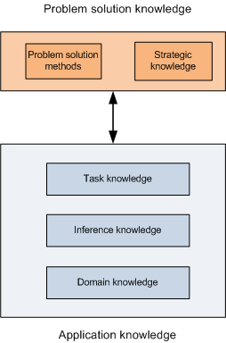
Domain Knowledge
It details the entities and concepts regarding the application domain (knowledge domain), independently of how they have been used for other knowledge types.
Inference Knowledge
It deals with the different types of inferences (reasoning elements used by the expert in the task solution). An inference is defined by its input and output, which are the domain roles. The inference does not allow subsequent decompositions.
Task Knowledge
It specifies the task goal and the method to solve it.
Problem solving methods
It describes a task solving method, specifying the subtasks
recursive decomposition and the order to execute them.
Strategic knowledge
It specifies the task plan. The strategic knowledge consideration allows more flexible system design.
Like any other software project, there must be a human structure to organize, manage and develop the Knowledge-Based Systems. In KBS development there are six relevant roles involved in the system construction. The most representative ones are shown in the image below and explained in the following lines:
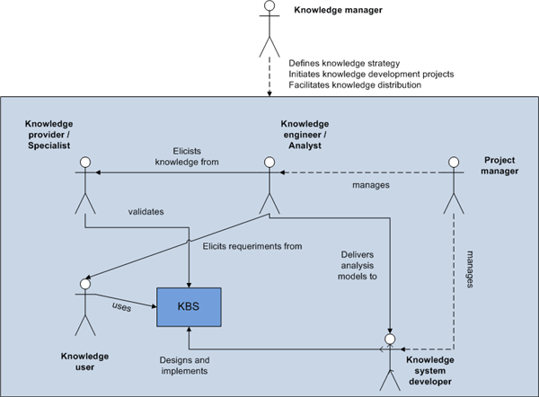
Knowledge provider / specialist
This is the owner of human "knowledge". It is
typically an expert in the application domain, but could be other person in
the organization who does not have the expert status.
Knowledge engineer / analyst
One important problem for the Knowledge engineer is to find
the real experts previously commented. The term "Knowledge
engineer" is usually reserved for system-analysis work. It could be
also called "knowledge analyst", therefore, these two terms can be
considered interchangeable.
CommonKADS offers the Knowledge engineer a range of methods and tools that
make the analysis of a standard knowledge-intensive task relatively
straightforward.
Knowledge system developer
The knowledge system developer is the responsible for design
and implementation. The developer must have a basic background of analysis
methods. In knowledge system development the main knowledge problems have
been solved by the knowledge analyst. Therefore, this role must have some
skills of software designers.
Knowledge user
A knowledge user makes use directly or indirectly of a knowledge
system. His interaction with the KBS is important for the project
development and validation.
Project manager
Manages the project, specially the knowledge engineer and
the knowledge system developer.
Knowledge manager
He is in the top of the hierarchy and acts as a project manager but in higher levels. It's like a knowledge strategist, cooperating, defining and distributing the knowledge to coordinate all the other roles.
To illustrate the previous concepts I chose to develop a small literary assistant application featuring an expert system. The basic idea of the assistant is to assign a particular book to a reader according its age, education and interests. The application does not pretend to be a real world system but it could be a limited version of what it should be. Therefore, it could be used (in large-scale) in a library or book-store to advise readers which book they should read.
It describes the concepts and concept relationship involved in a domain (mechanic, medicine, etc.). The concept is the representative central entity in
the domain knowledge. A concept is identified by its name and refers to
abstract entities (patient) or specific entities (patient John). It is like the
C++ or Java class concept.
The concepts are described by their properties or attributes, defined by their type
and name. The property is the atom of the domain knowledge representation. The
domain knowledge is composed of of three elements, they are the followings:
We define the concepts and attributes using UML for example, although we could use other AI modeling languages like KIF, Ontolingua, etc.
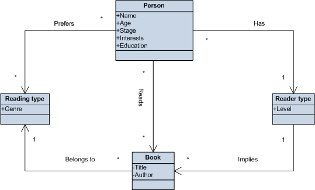
After
drawing the diagram we will write them in CML (CommonKADS Conceptual Modeling
Language).
|
CONCEPT Person;
ATTRIBUTES: Name: String; Age: Int; Stage: String; Interests: String; Education: String; END CONCEPT Person; |
CONCEPT Reading-type; ATTRIBUTES: Genre: String; END CONCEPT;
|
CONCEPT Reader-type; ATTRIBUTES: Level: String; END CONCEPT; |
CONCEPT Book; ATTRIBUTES: Title: String; Author: String; END CONCEPT; |
They represent relations in an if..then rule form: a conditional expression in the antecedent and assigment expression in the consequent. They suppose a cause-effect association. In the example the relations are the following:
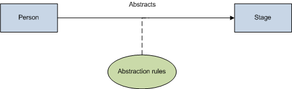
|
RULE-TYPE
Abstraction-rules; |
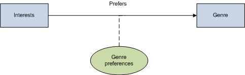
| RULE-TYPE
Genre-preferences; DESCRIPTION: Genre selection starting from the interests ANTECEDENT: Interests; CARDINALITY: 1; CONSEQUENT: Genre; CARDINALITY: *; CONNECTION-SYMBOL: Prefers; END-RULE-TYPE Genre-preferences; |
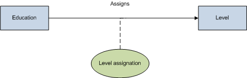
| RULE-TYPE
Level-assignation; DESCRIPTION: Assigns a level according the education ANTECEDENT: Education; CARDINALITY: 1; CONSEQUENT: Level; CARDINALITY: 1; CONNECTION-SYMBOL: Assigns; END-RULE-TYPE Level-assignation; |
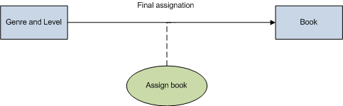
| RULE-TYPE
Assign-book; DESCRIPTION: Assign books ANTECEDENT: Genre and Level; CARDINALITY: *; CONSEQUENT: Book; CARDINALITY: *; CONNECTION-SYMBOL: Final assignation; END-RULE-TYPE Assign-book; |
The knowledge-base gets the pairs through different generic rules previously defined. Here below is a sample instance of the knowledge-base:
|
KNOWLEDGE-BASE Literary-assistant-base /* Discriminate interests */ Person.interests = "Music" OR Person.interests = "Painting" OR /* Adjust reader level */ END KNOWLEDGE-BASE Literary-assistant-base; |
The inference knowledge refers to the subtask sets that do not need
subsequent decomposition. They are the reasoning primitives and the elemental
reasoning steps for task resolution. They are described by specifying the
performed function and their input and output. It's important to note that the
inference description does not imply how it is performed, because it depends
strongly on the particular application and domain.
As explained before, the inference is the basic reasoning step, but it depends on the domain roles:
Static roles: They are the domain elements that are used in the reasoning process but are not affected by it.
Dynamic roles: They are the inference input and output that sign the domain elements that will be used during the reasoning process.
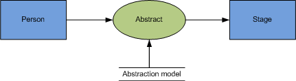
| INFERENCE Abstract ROLES INPUT: Person; OUTPUT: Stage; STATIC: Abstraction-model; SPECIFICATION: "Abstracts the age of a person" END INFERENCE Abstract; |
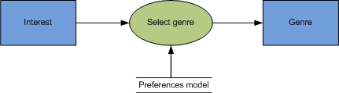
| INFERENCE Select-genre ROLES INPUT: Interest; OUTPUT: Genre; STATIC: Preferences-model; SPECIFICATION: "Selects a genre according the user's interests" END INFERENCE Abstract; |
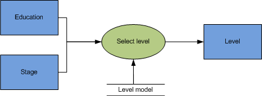
| INFERENCE Select-level ROLES INPUT: Education,Stage; OUTPUT: Level; STATIC: Level-model; SPECIFICATION: "Selects a level according the user's education and stage" END INFERENCE Abstract; |
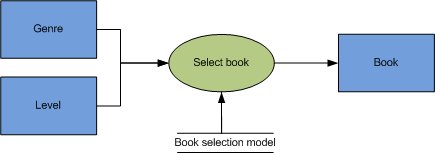
| INFERENCE Select-book ROLES INPUT: Genre, Level; OUTPUT: Book; STATIC: Book-selection-model; SPECIFICATION: "Assigns a book according the user's level and selected genres" END INFERENCE Abstract; |
After modelling the inference knowledge it is necessary to describe its connection with the elements of the knowledge domain. In the example it results as follows:
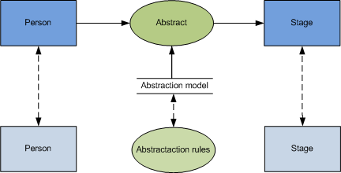
| KNOWLEDGE-ROLE Person; TYPE: DYNAMIC; DOMAIN-MAPPING: Person; END KNOWLEDGE-ROLE Person; |
KNOWLEDGE-ROLE Abstraction-model; TYPE: STATIC; DOMAIN-MAPPING:Abstraction-rules FROM literary-assistant-scheme; ; END KNOWLEDGE-ROLE Abstraction-model;
|
KNOWLEDGE-ROLE Stage; TYPE: DYNAMIC; DOMAIN-MAPPING: Stage; END KNOWLEDGE-ROLE Stage; |
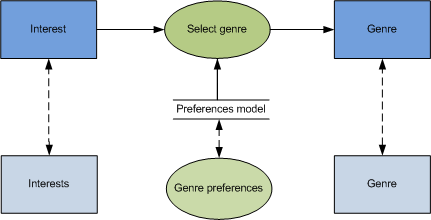
| KNOWLEDGE-ROLE Interest; TYPE: DYNAMIC; DOMAIN-MAPPING: Interest; END KNOWLEDGE-ROLE Interest; |
KNOWLEDGE-ROLE Preferences-model; TYPE: STATIC; DOMAIN-MAPPING:Genre preferences FROM literary-assistant-scheme; ; END KNOWLEDGE-ROLE Preferences-model;
|
KNOWLEDGE-ROLE Genre; TYPE: DYNAMIC; DOMAIN-MAPPING: Genre; END KNOWLEDGE-ROLE Genre; |
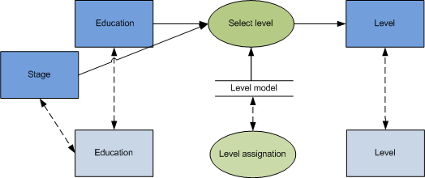
| KNOWLEDGE-ROLE Education; TYPE: DYNAMIC; DOMAIN-MAPPING: Education; END KNOWLEDGE-ROLE Education; |
KNOWLEDGE-ROLE Stage; TYPE: DYNAMIC; DOMAIN-MAPPING: Education; END KNOWLEDGE-ROLE Education; |
KNOWLEDGE-ROLE Level-model; TYPE: STATIC; DOMAIN-MAPPING:Level-assignation FROM literary-assistant-scheme; END KNOWLEDGE-ROLE Level-model;
|
KNOWLEDGE-ROLE Level; TYPE: DYNAMIC; DOMAIN-MAPPING: Level; END KNOWLEDGE-ROLE Level; |
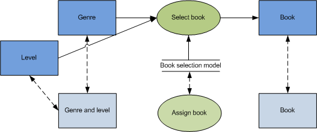
| KNOWLEDGE-ROLE Genre; TYPE: DYNAMIC; DOMAIN-MAPPING: Genre-and-Level; END KNOWLEDGE-ROLE Genre; |
KNOWLEDGE-ROLE Level; TYPE: DYNAMIC; DOMAIN-MAPPING: Genre-and-Level; END KNOWLEDGE-ROLE Level; |
KNOWLEDGE-ROLE Book-selection-model; TYPE: STATIC; DOMAIN-MAPPING:Assign-book FROM literary-assistant-scheme; END KNOWLEDGE-ROLE Book-selection-model;
|
KNOWLEDGE-ROLE Book; TYPE: DYNAMIC; DOMAIN-MAPPING: Book; END KNOWLEDGE-ROLE Book; |
The task is a general objective (diagnose, planify,...) and to get it a method is used which implies a subtask decomposition in more elemental tasks and a control to sequence them in task runtime. When dividing the subtasks recursively we get the last level of elemental tasks that are not decomposable anymore and they are called inferences. The control method knowledge is essential for the final implementation of a task. It specifies a clear, precise and unequivocal procedure to link the inferences. In the following image we can see the task diagram and its subtask decomposition in inferences.
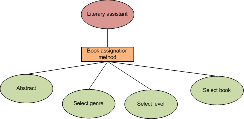
| TASK Literary-assistant GOAL: "Advice a book to a reader"; ROLES: INPUT: Person: "A person who wants to read a book"; OUTPUT: Book: "Some books to read"; SPEC: |
| TASK-METHOD Literary-assistant-sequential; REALIZES: "Literary assistant"; DECOMPOSITION: INFERENCES: Abstract, Select-genre, Select-level, Select-book; TRANSFER-FUNCTIONS:; ROLES: INTERMEDIATE: Abstraction-model: Preferences-model: Level-model: Book-selection-model: CONTROL-STRUCTURE: Abstract(+Stage,-Person,-Abstraction-model); Select-genre(+Genre,-Interest,-Preferences-model); Select-level(+Level,-Education,-Stage,-Level-model); Select-Book(+Book,-Genre,-Level,-Book-selection-model); END-TASK-METHOD Literary-assistant-sequential; |
To implement the example, I chose to use CLIPS, an expert system tool created in 1985 with these features:
Knowledge representation: CLIPS provides a cohesive tool for handling a wide variety of knowledge with support for three different programming paradigms: rule-based, object-oriented and procedural.
Portability: CLIPS is written in C for portability and speed and has been installed on many different operating systems without code changes. Operating systems on which CLIPS has been tested include Windows XP, MacOS X, and Unix. CLIPS can be ported to any system which has an ANSI compliant C or C++ compiler. CLIPS comes with all source code which can be modified or tailored to meet user-specific needs.
Integration/Extensibility: CLIPS can be embedded within procedural code, called as a subroutine, and integrated with languages such as C, C++, Java, FORTRAN and ADA.
Verification/Validation: CLIPS includes a number of features to support the verification and validation of expert systems including support for modular design and partitioning of a knowledge base, static and dynamic constraint checking of slot values and function arguments, and semantic analysis of rule patterns to determine if inconsistencies could prevent a rule from firing or generate an error.
Fully documented
Low cost: CLIPS is maintained as public domain software.
Here below is a sample of the complete source code included in this article and written in CLIPS:
; Select level according to education (defrule select_level ?f1<-(start_level) (person (education ?edu)(stage ?stg)) (level (education ?edu)(stage ?stg)(level ?lev)) => (assert (reader-type (level ?lev))) (retract ?f1) ) ; Find interests in interest list (deffunction has_person (?mat $?interests) (return (member$ ?mat $?interests)) ) ; Select genre according to interests (defrule select_genre (interests) (person (interests $?interests)) (matter (interest $?cat)(genre ?genre)) => (bind ?i 1) (while (<= ?i (length$ $?interests)) (bind ?mat (nth$ ?i $?interests)) (if (has_person ?mat $?cat) then (assert (reading-type (genre ?genre))) ) (bind ?i (+ ?i 1)) ) ) ; Select book according to interests (defrule recommend_book (reader-type (level ?level)) (reading-type (genre ?genre)) (category (level ?level)(genre ?genre)(book ?book)) => (printout t "According to this data, you should read: " ?book crlf) )
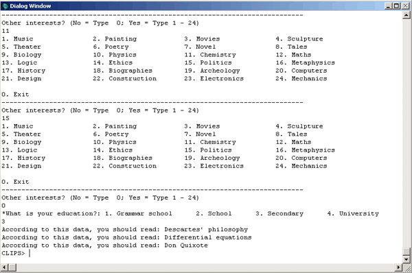
The image above presents the execution of the application in CLIPS. Note that if you type an age and a education that do not have logic match, the system will not return any result. For example, if you type age 50 and education Child the system will not return any suggestion.
The simplest form to embed the CLIPS source into C++ is to include the header
file "clips.h" through the extern keyword in the project. Next,
we will call InitializeEnvironment to run CLIPS engine and call
Load to load the the .clp file containing the source.
Finally, call reset and run to start the application.
Below, is the code snippet to perform this:
#include <iostream>
extern "C"
{
#include "clips.h"
}
using namespace std;
int main(int argc, char* argv[])
{
InitializeEnvironment();
Load("literary assistant.clp"); // Insert the CLIPS source code here
Reset();
Run(-1L);
cin.get();
return 0;
}
Knowledge engineering and management: the CommonKADS methodology.
[Guus Schreiber][ Hans Akkermans][Anjo Anjewierden][Robert de Hoog][Nigel Shadbolt] et al.
Massachusetts Institute of Technology.
http://www.csae.map.es/csi/silice/Sgexpt.html
[Consejo Superior de Administraci\F3n Electr\F3nica - Goverment of Spain]
Basic aspects of the Artificial Intelligence.
[J. Mira][A.E. Delgado][ J.G. Boticario][ F.J. Diez]
UNED - National University for Distance Education.
Methodological aspects of the KBS development.
[J. Mira][R. Mart\EDnez Tom\E1s]
UNED - National University for Distance Education.
CLIPS a tool for building expert systems.
http://clipsrules.sourceforge.net/